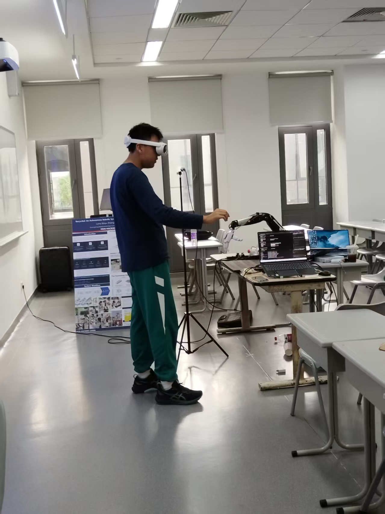
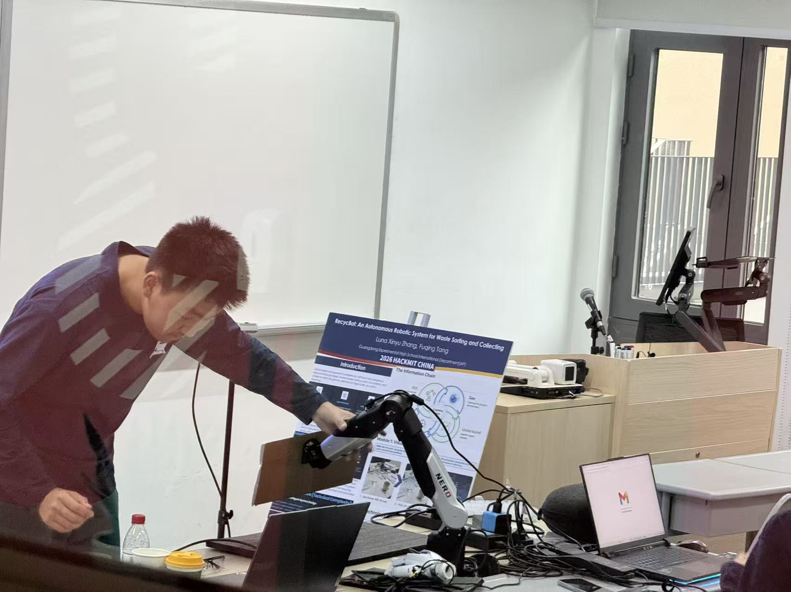

Environment and dependency validation
Start with reproducibility: environment setup, model loading, camera access, and self-test scripts before moving hardware.
The build moved through environment setup, perception validation, calibration, grasp tuning, and demo integration.
Start with reproducibility: environment setup, model loading, camera access, and self-test scripts before moving hardware.
Validate 2D detection quality and object categories before depth and calibration are expected to carry the whole stack.
Use calibration to make camera output actionable. Without this step, robot motion is disconnected from perception.
The key engineering decision was to validate alignment, motion policy, and hardware timing incrementally before claiming robust physical sorting.
The operator console and project website become communication layers for judges, teammates, and future contributors.
These snapshots document assembly, coding, and submission work during the hackathon.
This assembly snapshot records the hardware integration work required before the robot could attempt physical sorting.

This coding session shows the software integration phase where perception, coordinates, and motion control were connected.

This testing photo captures the team exploring a VR-based interaction mode as part of the wider robot-control workflow.

This setup clip documents the calibration step that enabled later coordinate transformation and robot targeting.
This image shows the physical reference object positioned inside the robot workspace before calibration and follow control were tested.

Safe progress matters because it is one of the clearest signs of mature engineering judgment in a robotics project.
Reliability improved through repeated tuning of detections, coordinate alignment, and motion timing.
The build journey is presented as milestones supported by photos and concrete results.